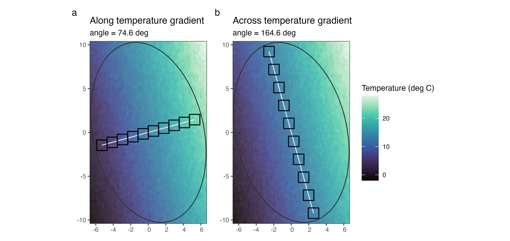
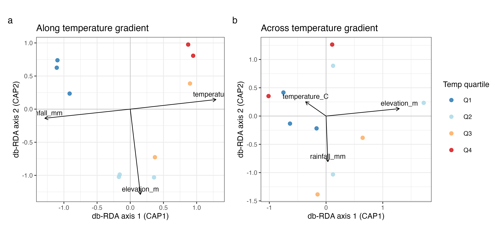
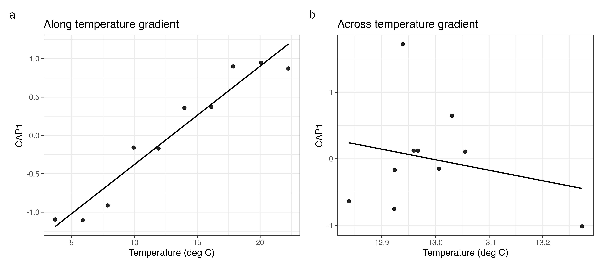

Constrained ordination (db-RDA) on simulated spesim data
Source:vignettes/spesim-ordination-dbrda.Rmd
spesim-ordination-dbrda.RmdThis vignette shows how to use spesim to generate a realistic (but known) community dataset for practising constrained ordination.
We will:
- Simulate a community in an irregular domain with strong environmental gradients.
- Add positive and negative interspecific interactions (local neighbourhood effects).
- Compare two transect sampling designs:
- one transect aligned along the temperature gradient
- one transect set across (perpendicular to) the temperature gradient
- For each design, obtain:
- a site × species abundance table
- a site × environment table (mean environment per quadrat)
- Fit distance-based RDA (db-RDA) models using
vegan’s
capscale(). - Arrange paired figures (
a,b) and summarise key results in a gt table.
2) Configure a simulation with strong gradients + interactions
We start from the packaged basic init file and then modify it.
`%||%` <- function(a, b) if (!is.null(a)) a else b
init_file <- system.file("examples/spesim_init_basic.txt", package = "spesim")
P <- load_config(init_file)
# --- keep the vignette fast-ish
P$N_INDIVIDUALS <- 3000L
P$N_SPECIES <- 16L
P$N_QUADRATS <- 10L
P$SAMPLING_RESOLUTION <- 70L
P$ENVIRONMENTAL_NOISE <- 0.02
P$ADVANCED_ANALYSIS <- FALSE
quadrat_size_scale <- 0.8 # reduce quadrat side lengths by 20%
# --- strong filtering (narrow tolerances)
# A-J respond to temperature, K-L to elevation, M-P have no gradient response.
P$GRADIENT_SPECIES <- LETTERS[1:12]
P$GRADIENT_ASSIGNMENTS <- c(rep("temperature", 10), rep("elevation", 2))
P$GRADIENT_OPTIMA <- c(
stats::setNames(seq(0.10, 0.90, length.out = 10), LETTERS[1:10]),
K = 0.30,
L = 0.75
)
P$GRADIENT_TOLERANCE <- 0.06
# --- local interactions
# Values < 1 weaken neighbours (negative interactions); > 1 strengthen (positive).
P$INTERACTION_RADIUS <- 1.0
P$INTERACTIONS_EDGELIST <- c(
# negative (competition/inhibition)
"B,A,0.80",
"C,A,0.85",
"D,B,0.75",
"E,D,0.80",
# mild background pressure for some focal species (from all neighbours)
"B,*,0.98",
"C,*,0.98",
# positive (facilitation)
"F,G,1.25",
"G,F,1.15",
"H,I,1.20",
"I,H,1.10"
)
# Reproducibility
P$SEED <- 2026L3) Two sampling designs and shared analysis helpers
To isolate the effect of sampling design, we keep the same underlying simulated community and only change transect orientation.
# Build a single deterministic domain that both designs will share.
set.seed(P$SEED)
domain <- create_sampling_domain()
# Temperature is generated from normalised coordinates:
# temp ~ 0.7*x_norm + 0.3*y_norm
# where x_norm = (x - xmin)/(xmax-xmin), so the true gradient direction in
# x–y space depends on the domain bounding box aspect ratio.
bb <- sf::st_bbox(domain)
xrange <- as.numeric(bb["xmax"] - bb["xmin"])
yrange <- as.numeric(bb["ymax"] - bb["ymin"])
# Bearing of increasing temperature (0 = North, 90 = East)
temp_angle <- (atan2(0.7 / xrange, 0.3 / yrange) * 180 / pi) %% 360
# Perpendicular (approx. along isotherms; minimal temperature change)
across_angle <- (temp_angle + 90) %% 360
design_angles <- tibble::tibble(
design = c("Along temperature gradient", "Across temperature gradient"),
transect_angle_deg = c(temp_angle, across_angle)
)
design_anglesR>
[38;5;246m# A tibble: 2 × 2
[39m
R> design transect_angle_deg
R>
[3m
[38;5;246m<chr>
[39m
[23m
[3m
[38;5;246m<dbl>
[39m
[23m
R>
[38;5;250m1
[39m Along temperature gradient 74.6
R>
[38;5;250m2
[39m Across temperature gradient 165.
safe_cor <- function(x, y) {
ok <- is.finite(x) & is.finite(y)
if (sum(ok) < 3) return(NA_real_)
if (stats::sd(x[ok]) == 0 || stats::sd(y[ok]) == 0) return(NA_real_)
stats::cor(x[ok], y[ok])
}
build_sampling_plot <- function(res, title, subtitle = NULL) {
ctr <- sf::st_coordinates(sf::st_centroid(res$quadrats))
tran <- data.frame(
quadrat_id = res$quadrats$quadrat_id,
x = ctr[, 1],
y = ctr[, 2]
) |>
dplyr::arrange(quadrat_id)
ggplot() +
geom_raster(
data = res$env_gradients,
aes(x = x, y = y, fill = temperature_C),
alpha = 0.9,
interpolate = TRUE
) +
viridis::scale_fill_viridis(name = "Temperature (deg C)", option = "mako") +
geom_sf(data = res$domain, fill = NA, colour = "grey20", linewidth = 0.4) +
geom_path(
data = tran,
aes(x = x, y = y),
linewidth = 0.45,
colour = "white",
alpha = 0.8
) +
geom_sf(data = res$quadrats, fill = NA, colour = "black", linewidth = 0.45) +
coord_sf(expand = FALSE) +
theme_bw(base_size = 8) +
labs(title = title, subtitle = subtitle, x = NULL, y = NULL)
}
build_cap_plot <- function(sc_sites, sc_bp, title) {
p <- ggplot(sc_sites, aes(x = CAP1, y = CAP2)) +
geom_hline(yintercept = 0, linewidth = 0.2, colour = "grey70") +
geom_vline(xintercept = 0, linewidth = 0.2, colour = "grey70") +
geom_point(aes(colour = temp_bin), size = 1.6, alpha = 0.85) +
coord_equal() +
scale_colour_brewer(palette = "RdYlBu", direction = -1, name = "Temp quartile") +
labs(
x = "db-RDA axis 1 (CAP1)",
y = "db-RDA axis 2 (CAP2)",
title = title
)
if (nrow(sc_bp) > 0) {
p <- p +
geom_segment(
data = sc_bp,
aes(x = 0, y = 0, xend = CAP1, yend = CAP2),
inherit.aes = FALSE,
arrow = arrow(length = unit(0.14, "cm")),
linewidth = 0.3,
colour = "black"
) +
geom_text(
data = sc_bp,
aes(x = CAP1, y = CAP2, label = var),
inherit.aes = FALSE,
size = 2.5,
vjust = -0.6
)
}
p
}
analyse_design <- function(P_base, domain, label, angle_deg) {
P2 <- P_base
P2$SAMPLING_SCHEME <- "transect"
P2$N_TRANSECTS <- 1L
P2$N_QUADRATS_PER_TRANSECT <- P2$N_QUADRATS
P2$TRANSECT_ANGLE <- angle_deg
# Build deterministic species/environment first, then re-place
# reduced-size transect quadrats for this comparison.
res <- spesim_run(P2, domain = domain, write_outputs = FALSE, seed = P2$SEED, quiet = TRUE)
quadrat_size_reduced <- as.numeric(res$P$QUADRAT_SIZE) * quadrat_size_scale
quadrats <- place_quadrats_transect(
domain = res$domain,
n_transects = P2$N_TRANSECTS,
n_quadrats_per_transect = P2$N_QUADRATS_PER_TRANSECT,
quadrat_size = quadrat_size_reduced,
angle = angle_deg
)
if (nrow(quadrats) == 0) {
stop("Failed to place reduced-size quadrats.")
}
res$quadrats <- quadrats
all_species <- LETTERS[1:P2$N_SPECIES]
A <- create_abundance_matrix(res$species_dist, res$quadrats, all_species)
E <- calculate_quadrat_environment(res$env_gradients, res$quadrats, sf::st_crs(res$domain))
dat <- dplyr::left_join(E, A, by = "site")
stopifnot(nrow(dat) == nrow(A))
Y <- dat |> dplyr::select(-site, -temperature_C, -elevation_m, -rainfall_mm)
X <- dat |> dplyr::select(site, temperature_C, elevation_m, rainfall_mm)
Xz <- vegan::decostand(dplyr::select(X, -site), method = "standardize")
cap_model <- vegan::capscale(
Y ~ temperature_C + elevation_m + rainfall_mm,
data = Xz,
distance = "bray",
add = TRUE
)
set.seed(P2$SEED)
model_test <- vegan::anova.cca(cap_model, permutations = 199)
model_p <- as.numeric(model_test$`Pr(>F)`[1])
adj_r2 <- as.numeric(vegan::RsquareAdj(cap_model)$adj.r.squared)
vif_vals <- tryCatch(vegan::vif.cca(cap_model), error = function(e) NA_real_)
vif_vals <- as.numeric(vif_vals)
vif_vals <- vif_vals[is.finite(vif_vals)]
vif_max <- if (length(vif_vals)) max(vif_vals) else NA_real_
sc_sites <- as.data.frame(vegan::scores(cap_model, display = "sites", scaling = 2))
sc_bp <- as.data.frame(vegan::scores(cap_model, display = "bp", scaling = 2))
sc_sites$site <- dat$site
sc_sites <- dplyr::left_join(sc_sites, X, by = "site")
sc_sites$temp_bin <- factor(dplyr::ntile(sc_sites$temperature_C, 4), labels = paste0("Q", 1:4))
arrow_mul <- 1.3
sc_bp$var <- rownames(sc_bp)
if (nrow(sc_bp) > 0) {
sc_bp$CAP1 <- sc_bp$CAP1 * arrow_mul
sc_bp$CAP2 <- sc_bp$CAP2 * arrow_mul
}
cor_tbl <- sc_sites |>
dplyr::summarise(
cor_cap1_temp = safe_cor(CAP1, temperature_C),
cor_cap1_elev = safe_cor(CAP1, elevation_m),
cor_cap1_rain = safe_cor(CAP1, rainfall_mm)
) |>
dplyr::mutate(design = label, .before = 1)
metrics <- cor_tbl |>
dplyr::mutate(
transect_angle_deg = angle_deg,
n_quadrats = nrow(res$quadrats),
temp_range_C = diff(range(sc_sites$temperature_C, na.rm = TRUE)),
adj_r2 = adj_r2,
model_p = model_p,
max_vif = vif_max,
.before = cor_cap1_temp
) |>
dplyr::select(
design,
transect_angle_deg,
n_quadrats,
temp_range_C,
adj_r2,
model_p,
cor_cap1_temp,
cor_cap1_elev,
cor_cap1_rain,
max_vif
)
sampling_plot <- build_sampling_plot(
res,
title = label,
subtitle = sprintf("angle = %.1f deg", angle_deg)
)
cap_plot <- build_cap_plot(sc_sites, sc_bp, title = label)
list(
label = label,
angle = angle_deg,
res = res,
A = A,
E = E,
dat = dat,
cap = cap_model,
cor_tbl = cor_tbl,
metrics = metrics,
sampling_plot = sampling_plot,
cap_plot = cap_plot
)
}4) Run both designs
# 'domain' was created above so that both designs share the same geometry.
along <- analyse_design(
P_base = P,
domain = domain,
label = "Along temperature gradient",
angle_deg = temp_angle
)R> ---- Interactions Summary ----
R> Species: 16 (A..P)
R> Radius : 1
R> Non-1 entries: 36 (14.1% of 256)
R> Asymmetry (mean |M - t(M)|): 0.009
R>
R> Non-1 entries (sorted by |value-1|):
R> focal neighbor value
R> D B 0.75
R> F G 1.25
R> E D 0.80
R> H I 1.20
R> G F 1.15
R> I H 1.10
R> B A 0.98
R> B C 0.98
R> B D 0.98
R> B E 0.98
R> B F 0.98
R> B G 0.98
R> B H 0.98
R> B I 0.98
R> B J 0.98
R> B K 0.98
R> B L 0.98
R> B M 0.98
R> B N 0.98
R> B O 0.98
R> ------------------------------
across <- analyse_design(
P_base = P,
domain = domain,
label = "Across temperature gradient",
angle_deg = across_angle
)R> ---- Interactions Summary ----
R> Species: 16 (A..P)
R> Radius : 1
R> Non-1 entries: 36 (14.1% of 256)
R> Asymmetry (mean |M - t(M)|): 0.009
R>
R> Non-1 entries (sorted by |value-1|):
R> focal neighbor value
R> D B 0.75
R> F G 1.25
R> E D 0.80
R> H I 1.20
R> G F 1.15
R> I H 1.10
R> B A 0.98
R> B C 0.98
R> B D 0.98
R> B E 0.98
R> B F 0.98
R> B G 0.98
R> B H 0.98
R> B I 0.98
R> B J 0.98
R> B K 0.98
R> B L 0.98
R> B M 0.98
R> B N 0.98
R> B O 0.98
R> ------------------------------Quick check that only sampling differs (same simulated species cloud):
isTRUE(all.equal(
sf::st_coordinates(along$res$species_dist),
sf::st_coordinates(across$res$species_dist)
))R> [1] TRUE5) Figure 1: sampling designs (a, b)
fig_sampling <- patchwork::wrap_plots(
along$sampling_plot,
across$sampling_plot,
ncol = 2,
guides = "collect"
) +
patchwork::plot_annotation(tag_levels = "a")
fig_sampling
Figure 1. Quadrat placement over the temperature surface: (a) along-gradient transect, (b) across-gradient transect.
6) Full db-RDA workflow for each design
6.1 Site × species and site × environment tables
dplyr::bind_rows(
tibble::tibble(design = along$label, n_sites = nrow(along$A), n_species_cols = ncol(along$A) - 1L),
tibble::tibble(design = across$label, n_sites = nrow(across$A), n_species_cols = ncol(across$A) - 1L)
)R>
[38;5;246m# A tibble: 2 × 3
[39m
R> design n_sites n_species_cols
R>
[3m
[38;5;246m<chr>
[39m
[23m
[3m
[38;5;246m<int>
[39m
[23m
[3m
[38;5;246m<int>
[39m
[23m
R>
[38;5;250m1
[39m Along temperature gradient 10 16
R>
[38;5;250m2
[39m Across temperature gradient 10 166.2 db-RDA model summaries
along$capR>
R> Call: vegan::capscale(formula = Y ~ temperature_C + elevation_m +
R> rainfall_mm, data = Xz, distance = "bray", add = TRUE)
R>
R> Inertia Proportion Rank
R> Total 3.6496 1.0000
R> Constrained 2.7367 0.7499 3
R> Unconstrained 0.9129 0.2501 6
R>
R> Inertia is Lingoes adjusted squared Bray distance
R>
R> -- NOTE:
R> Species scores projected from 'Y'
R>
R> Eigenvalues for constrained axes:
R> CAP1 CAP2 CAP3
R> 1.2707 1.0065 0.4595
R>
R> Eigenvalues for unconstrained axes:
R> MDS1 MDS2 MDS3 MDS4 MDS5 MDS6
R> 0.3211 0.2116 0.1785 0.1391 0.0558 0.0067
R>
R> Constant added to distances: 0.01943086
across$capR>
R> Call: vegan::capscale(formula = Y ~ temperature_C + elevation_m +
R> rainfall_mm, data = Xz, distance = "bray", add = TRUE)
R>
R> Inertia Proportion Rank
R> Total 1.7332 1.0000
R> Constrained 0.6668 0.3847 3
R> Unconstrained 1.0664 0.6153 6
R>
R> Inertia is Lingoes adjusted squared Bray distance
R>
R> -- NOTE:
R> Species scores projected from 'Y'
R>
R> Eigenvalues for constrained axes:
R> CAP1 CAP2 CAP3
R> 0.3458 0.2479 0.0730
R>
R> Eigenvalues for unconstrained axes:
R> MDS1 MDS2 MDS3 MDS4 MDS5 MDS6
R> 0.3594 0.2819 0.2038 0.1401 0.0484 0.0328
R>
R> Constant added to distances: 0.045715257) Figure 2: db-RDA ordinations (a,
b)
fig_ordination <- patchwork::wrap_plots(
along$cap_plot,
across$cap_plot,
ncol = 2,
guides = "collect"
) +
patchwork::plot_annotation(tag_levels = "a")
fig_ordination
Figure 2. db-RDA ordination biplots for each sampling design.
8) Figure 3: sanity check (CAP1 vs temperature; a,
b)
p_sanity_along <- ggplot(along$dat, aes(x = temperature_C, y = vegan::scores(along$cap, display = "sites", scaling = 2)[, "CAP1"])) +
geom_point(size = 1.2, alpha = 0.85) +
geom_smooth(method = "lm", se = FALSE, linewidth = 0.5, colour = "black") +
theme_bw(base_size = 8) +
labs(x = "Temperature (deg C)", y = "CAP1", title = along$label)
p_sanity_across <- ggplot(across$dat, aes(x = temperature_C, y = vegan::scores(across$cap, display = "sites", scaling = 2)[, "CAP1"])) +
geom_point(size = 1.2, alpha = 0.85) +
geom_smooth(method = "lm", se = FALSE, linewidth = 0.5, colour = "black") +
theme_bw(base_size = 8) +
labs(x = "Temperature (deg C)", y = "CAP1", title = across$label)
patchwork::wrap_plots(p_sanity_along, p_sanity_across, ncol = 2) +
patchwork::plot_annotation(tag_levels = "a")
Figure 3. CAP1 tracks the sampled temperature range differently under the two designs.
9) Key results summary table (gt)
summary_tbl <- dplyr::bind_rows(along$metrics, across$metrics)
if (has_gt) {
summary_tbl |>
gt::gt() |>
gt::fmt_number(
columns = c(transect_angle_deg, temp_range_C, adj_r2, cor_cap1_temp, cor_cap1_elev, cor_cap1_rain, max_vif),
decimals = 3
) |>
gt::fmt_number(columns = model_p, decimals = 4) |>
gt::cols_label(
design = "Sampling design",
transect_angle_deg = "Transect angle (deg)",
n_quadrats = "Quadrats",
temp_range_C = "Sampled temp range (deg C)",
adj_r2 = "Adj. R^2",
model_p = "Model p-value",
cor_cap1_temp = "cor(CAP1, temp)",
cor_cap1_elev = "cor(CAP1, elev)",
cor_cap1_rain = "cor(CAP1, rain)",
max_vif = "Max VIF"
) |>
gt::tab_header(
title = "db-RDA comparison by sampling design",
subtitle = "Along-gradient vs across-gradient transects"
)
} else {
knitr::kable(summary_tbl, digits = 3)
}| db-RDA comparison by sampling design | |||||||||
| Along-gradient vs across-gradient transects | |||||||||
| Sampling design | Transect angle (deg) | Quadrats | Sampled temp range (deg C) | Adj. R^2 | Model p-value | cor(CAP1, temp) | cor(CAP1, elev) | cor(CAP1, rain) | Max VIF |
|---|---|---|---|---|---|---|---|---|---|
| Along temperature gradient | 74.603 | 10 | 18.551 | 0.625 | 0.0050 | 0.966 | 0.114 | −0.964 | 342.292 |
| Across temperature gradient | 164.603 | 10 | 0.435 | 0.077 | 0.2800 | −0.236 | 0.844 | 0.020 | 1.710 |
10) Why this is useful for teaching
Because spesim generates: - the site × species
matrix (abund_matrix), and - the corresponding site
× environment matrix (via
calculate_quadrat_environment()),
you can repeatedly create controlled datasets where you know the truth (strong gradients and interactions were imposed) and then practise ordination workflows that aim to recover the dominant drivers under alternative sampling designs.
Suggested exercises
- Increase/decrease
GRADIENT_TOLERANCEand see how the constrained R² changes. - Turn interactions off (
INTERACTION_RADIUS <- 0) and compare db-RDA fits. - Compare single-transect, multi-transect, and non-transect designs to test sensitivity of constrained ordination outcomes to sampling geometry.